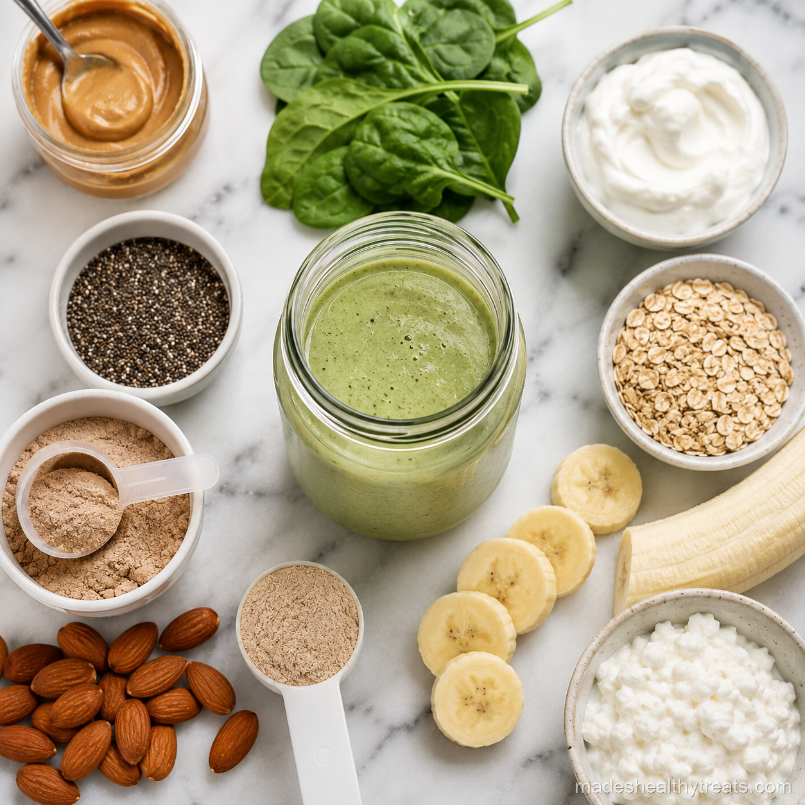

My Honest Smoothie Meal Replacement Experience
My smoothie meal replacement era started during a busy season when sitting down for lunch felt impossible. At first I made pretty fruit smoothies and called them meals, then felt hungry an hour later and personally offended by my own blender. Eventually I learned that a meal smoothie needs structure. It has to include protein, fat, fiber, and enough volume to feel like real food.
What Makes It Filling
Protein is the anchor. I use Greek yogurt, kefir, cottage cheese, hemp seeds, silken tofu, or protein rich milk when I want a smoothie to stand in for a meal. Fat matters too, so avocado, nut butter, chia, flax, or coconut can help the smoothie stay with me longer.
Fiber Is The Quiet Hero
Fiber is what makes a smoothie feel steady instead of quick. Greens, berries, chia seeds, flaxseed, oats, and whole fruit all help. Juice alone does not do this because the fiber is removed, which is why smoothies usually win when fullness is the goal.
My Go To Formula
My formula is one cup of liquid, one protein, one fruit, one green, one fat or seed, and one flavor booster. A favorite is almond milk, Greek yogurt, frozen banana, spinach, chia seeds, and cinnamon. It tastes creamy and keeps me full for hours.

I have learned that the best wellness habits are the ones that still feel kind on a normal Tuesday morning.
When It Works And When It Does Not
A smoothie meal replacement works beautifully for breakfast or lunch when I am busy but still want nourishment. It does not work as well when I am emotionally hungry for a warm meal, craving texture, or needing the satisfaction of chewing. Listening matters.
Three Meal Smoothies I Love
My green meal smoothie uses spinach, banana, Greek yogurt, chia, almond butter, and almond milk. My berry meal smoothie uses kefir, berries, oats, flax, and honey. My chocolate meal smoothie uses banana, cacao, cottage cheese, peanut butter, and oat milk. A smoothie meal replacement can be wonderful, but only when it is built like a meal and not a snack pretending to be brave.
The Texture Has To Feel Like A Meal
Texture matters more than I expected. A meal replacement smoothie that is thin and watery rarely satisfies me, even if the ingredients are technically good. I like it thick enough to sip slowly, almost like a milkshake, because that pace helps my brain register that I actually ate. Frozen banana, oats, chia, avocado, Greek yogurt, and cottage cheese all help create that creamy texture. When the texture is generous, I feel less tempted to rummage for snacks right after.
When I Choose A Plate Instead
There are days when I choose a plate instead, and that is part of staying honest. If I want something warm, savory, crunchy, or shared at a table, a smoothie is not the answer. A smoothie meal replacement is a tool, not a rule. It helps me on busy mornings and rushed lunches, but it does not need to replace the pleasure of real meals. The goal is nourishment that fits the day, not forcing every day into a mason jar.
The best sign that a meal smoothie worked is not fullness that feels heavy. It is quiet satisfaction. I can move into the next part of my day without thinking about food every ten minutes, but I also do not feel stuffed or sleepy. That middle place is what I am always aiming for. A good smoothie meal replacement should leave you steady, comfortable, and ready to live your life, not counting the minutes until the next snack.
You Might Also Like

Does a Smoothie a Day Actually Help You Lose Weight? I Tried It for 30 Days
I replaced my rushed breakfast with one green smoothie every morning for 30 days and tracked what really changed.
Read more →
What Happens to Your Body When You Drink Green Smoothies Every Day
I explain the simple body changes I noticed and the science that makes daily green smoothies make sense.
Read more →
The 7 Biggest Smoothie Mistakes That Are Ruining Your Results
I made these smoothie mistakes myself before I learned how to blend for energy, fullness, and real results.
Read more →Made's Note
If your smoothie leaves you hungry, it did not fail you. It probably just needs more protein, fat, and fiber, and you deserve a jar that actually carries you. When I think about smoothie meal replacement, I think about real mornings, real kitchens, and the small choices that help us feel at home in our bodies.